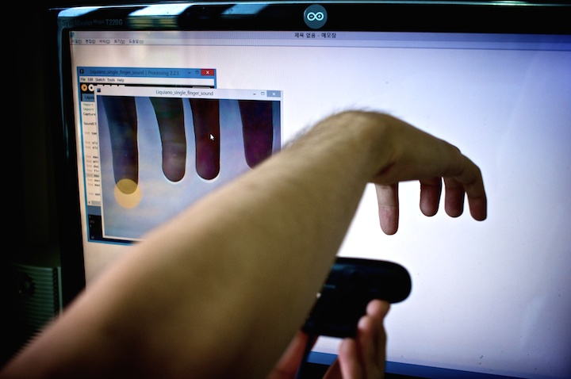

About Liquiano
리퀴아노(Liquiano)는 물이라는 매개체를 활용하여 소리를 만들어내는 새로운 형태의 전자 악기입니다. 물이 가지는 부드러움과 깊이, 그리고 파동의 성질을 악기 소리의 변수로 변환하여, 악기의 새로운 폼팩터를 제시합니다.
How It works
Processing - 사운드 및 비디오 라이브러리를 이용하여, 연주자의 손가락 움직임을 담은 화상 데이터를 미디(MIDI) 신호로 변환합니다.
Arduino - Liquiano의 하드웨어 컨트롤러를 연동합니다.
물, 그리고 컴퓨터만 있으면 언제 어디서든 사용할 수 있으며, 실제 앙상블에 사용할 수 있는 악기로써 제작하였습니다.